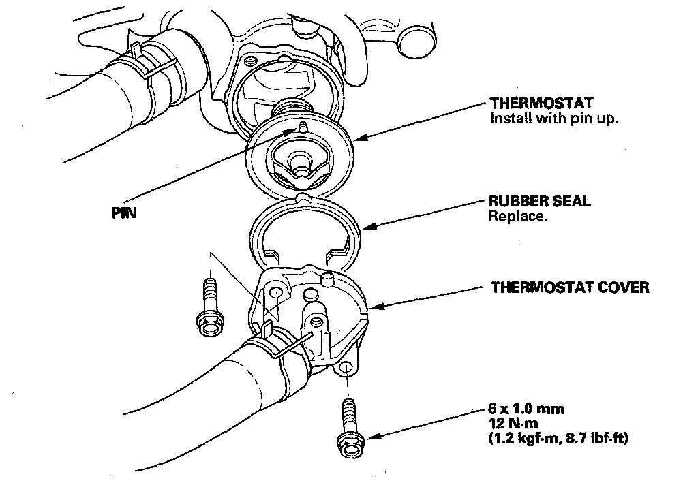

Thermostat: Service and Repair
Thermostat Replacement1. Make sure you have the anti-theft codes for the audio system and navigation system (if equipped). Make sure the ignition switch is OFF.
2. Disconnect the negative cable from the battery first, then disconnect the positive cable.
3. Remove the air intake duct.
4. Drain the engine coolant.
5. Remove the thermostat cover, then remove the thermostat.

6. Install the new thermostat with a new rubber seal in the reverse order of removal.
7. Install the battery. Clean the battery posts and cable terminals with sandpaper, then assemble them and apply grease to prevent corrosion.
8. Refill the radiator with engine coolant, then bleed air from the cooling system.
9. Clean up any spilled engine coolant.
10. Do the steering column position memorization.
11. Enter the anti-theft codes for the audio system and the navigation system (if equipped).
12. Set the clock.